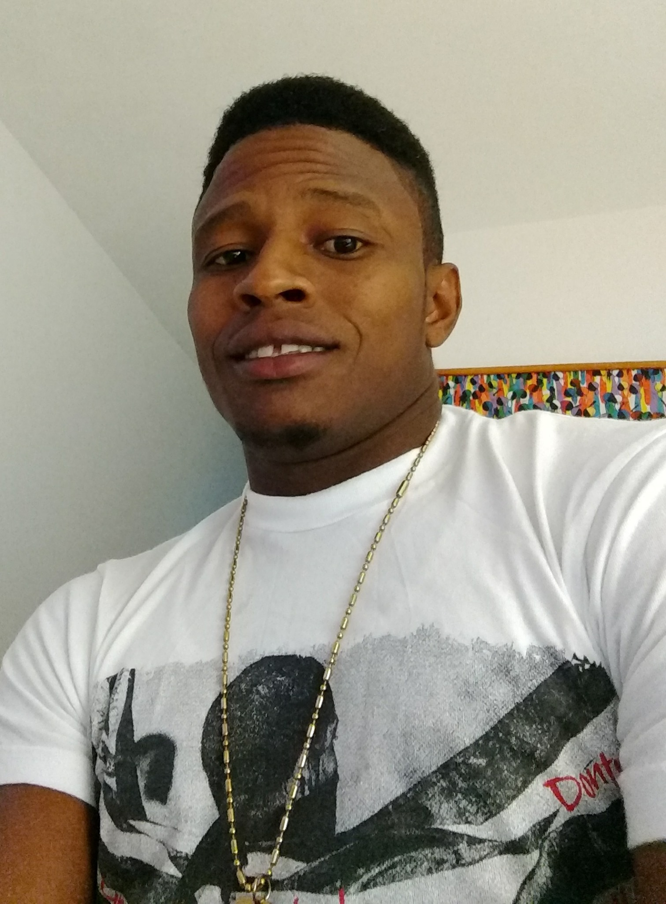

Zaro ILORSAINT

Summary
Result-oriented and market-driven are among the top attributes
that describe me. I am hardworking and capable of dealing with
the flow of paperwork and school duties while remaining efficient
in all tasks. My purpose is to understand the root of poverty, inequality,
and food insecurity and contribute to alleviating food insecurity in Haiti.
My fieldwork is in agricultural economics, with an increased interest
in data analysis and statistical modeling. MSC in Rural Development
at Ghent University, with great experience in developing communities, and graduated from the State University of Haiti in Agricultural Economics.
Work Experience
-
Mutual solidarity officer
Employer
Caris Fundation internation (Cayes, Haiti)
March 2017- August 2019
- Organize several sensitization sessions in Hospitals that aim at informing and sensitizing people with HIV or AIDS to integrate Mutual Solidarity Groups.
- Organize sensitization sessions in communities to inform and convince people to create Mutual Solidarity Groups.
- Create several Mutual Solidarity Groups and coordinate various activities (Savings, Credit, and Training) within the groups.
- Prepare yearly a global report that assesses all members of the groups' economic performance to test the program's efficacity.
-
Credit Officer
Employer
Fundation international Community Assitance (Croix-des-bouquets, Haiti)
January 2015- April 2016
- Promote access to credit for farmers, evaluated potential clients' solvability, and support farmers during the credit cycle.
Education
- Doctorat in biologie -Sherbrooke University (2023- onwards)
- Master in Statitical Data Analysis - Gent University (2021- 2024)
- International Master in Rural Development - Gent university (2019-2021)
- Diploma of Agricultural Ingineer (2009- 2014)
Languages
- English
- French
- Haitian creole
Digital Skills
Contact me